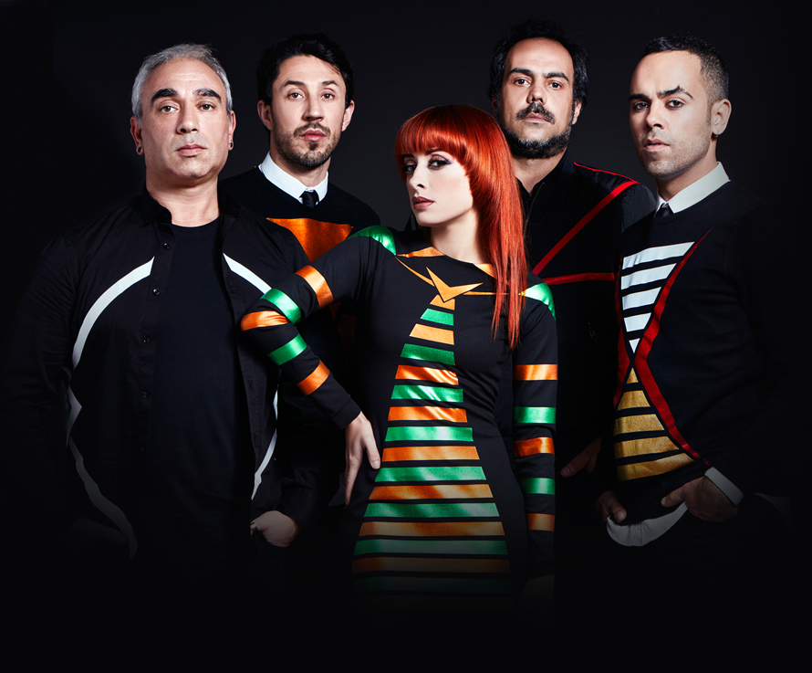

Biografia
Amor Electro é uma banda portuguesa formada em Lisboa em 2010 e ganhou popularidade graças ao seu estilo único e letras cativantes. O grupo é composto por Marisa Liz como vocalista, Tiago Pais Dias como guitarrista e multi-instrumentista, Ricardo Vasconcelos como tecladista, Rui Rechena como baixista, e Mauro Ramos como baterista. A banda mistura música rock (com alguns elementos eletrónicos) com música tradicional portuguesa, usando alguns instrumentos típicos como o acordeão e a guitarra portuguesa. Também revisitam temas da década de 1980 e da década de 1990 do pop/rock português, tocando versões de músicas de Sétima Legião, GNR, Ornatos Violeta e outras bandas, além de suas próprias músicas originais. A banda encontra-se atualmente em pausa indefinida.
Membros
Vocalista
Marisa Liz
Guitarrista
Tiago Pais Dias
Baterista
Mauro Ramos
Tecladista
Ricardo Vasconcelos
Baixista
Rui Rechena
Último Concerto
Evento: Parque Urbano da Quinta da Marialva
Palco: Palco Carlos Paredes
Nota: Dia 27 de Setembro de 2026, na gala dos 30 anos dos Globos de Ouro, a banda juntou-se excecionalmente para uma atuaçāo surpresa. Mas nāo há informações dísponiveis sobre o regresso oficial da banda.
Galeria

© 2026 Amor Electro. Segue-nos em: